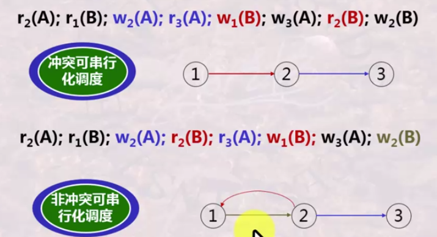
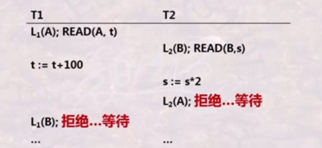
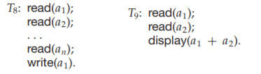
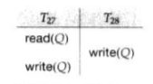

1. concurrency control
1. 基本概念
(1). 事务
事务是一个程序执行单元，由形如
其特性可总结为 (
- 原子性 (
Atomicity ): 原子不可分，要么全执行，要么全不执行 - 一致性 (
Consistency ): 事务的结果使数据库的状态是合理、正确的 - 隔离性 (
Isolation ): 举例来说，假设事务T1 和T2 可能并发执行，但执行的效果相当于二者先后执行，即并发的事务之间互不影响 - 持久性 (
Durability ): 事务执行完成后，它对数据库的改变必须是永久的，即使系统故障
(2). 调度
- 调度: 多个事务的操作序列的一个排列
- 串行调度: 对于事务
T 和T' ，如果T 的某个操作在T' 的某个操作前，则T 的所有操作都在T' 的操作前 - 并发调度: 事务的操作交叉执行。如果并发调度得到的结果和串行调度一致，就称并发调度是正确的
- 可串行性: 不管数据库初始状态如何，一个调度对数据库的影响和某个串行调度相同，称这个调度是可串行化的 (
Serializable ) - 可串行化调度一定是正确的并发调度，反之不一定。正确的并发调度可能修改了原事务的操作。
由此产生两个问题：① 如何判断并发调度的正确性； ② 如何产生一个正确的并发调度
2. 判断并发调度的正确性
(1). 冲突
用 $\small\mathsf{r_T(A)}$ 表示事务
- 冲突：调度中一对连续的操作，如果交换它们的顺序，涉及的多个事务中至少有一个行为改变，就说它们是冲突的。有冲突的操作不能交换次序。几种冲突的情况：
- 同一事务的任何两个动作是冲突的，如 $\mathsf{r_i(X);\ w_i(Y)\quad w_i(X);\ r_i(Y)}$
- 不同事务对同一个元素的两个写操作是冲突的，如 $\mathsf{w_i(X);\ w_j(X)}$
- 不同事务对同一个元素的一读一写操作是冲突的，如 $\mathsf{w_i(X);\ r_j(X)\quad r_i(X);\ w_j(X)}$
- 冲突可串行性：如果一个调度可以通过不断交换两个无冲突的相邻操作，转换至某一个串行调度，则称此调度冲突可串行
- 例: $\mathsf{r_1(A);\ w_1(A);\ r_2(A);\ w_2(A);\ r_1(B);\ w_1(B);\ r_2(B);\ w_2(B)}$ 冲突可串行
- 冲突可串行性是更严格的概念，冲突可串行一定可串行，反之不然
- 例: $\mathsf{w_1(Y);\ w_2(Y);\ w_2(X);\ w_1(X);\ w_3(X)}$ 不是冲突可串行，但由于
X 的结果由 $\mathsf{w_3}$ 决定，$\mathsf{w_1}$ 可以换到前面去，它是可串行的
(2). 冲突可串行判别方法
由于 冲突可串行 $\subseteq$ 可串行 $\subseteq$ 并发正确性，通过判别冲突可串行化，即可判定并发的正确性。
构造优先图:
- 优先图是有向图，结点 $\mathsf{i}$ 是调度中的事务 $\small\mathsf{T_i}$
- 如果 $\small\mathsf{T_i}$ 的一个操作与 $\small\mathsf{T_j}$ 的一个操作发生冲突，且 $\small\mathsf{T_i}$ 在 $\small\mathsf{T_j}$ 前执行，则绘制有向边 $\mathsf{i\to j}$，表示 $\small\mathsf{T_i}$ 应在 $\small\mathsf{T_j}$ 前执行
- 如果有向图无环，则它是冲突可串行化的

3. 基于锁的并发控制
可以通过锁机制产生正确的并发调度。
(1). 锁
- 锁的基本概念：
- 每个数据元素都有唯一的锁，且事务在读写元素前，要获得锁
- 如果被其他事务持有该元素的锁，需要等待
- 事务完成后要释放锁
- 锁的类型：
- 互斥锁 (
exclusive ): 只有一个事务可以读写，其他事务不能再加任何类型的锁 - 共享锁 (
shared ): 获得共享锁的事务可以读但不能写，其他事务同时可以加共享锁，不能加互斥锁 - 事务完成后要释放锁
- 锁协议需要考虑的方面:
- 锁的类型，相容性矩阵
- 锁的粒度: 元组 / 集合 / 数据库 ...
- 加锁的时机
(2). 死锁
- 产生原因: 多个事务间封锁了一些数据对象，然后又请求为其他事务封锁的对象加锁
- 预防方法:
- 每个事务必须一次将所有需要使用的对象加锁。存在问题:
① 降低并发度；② 难以提前确定需要加锁的对象 - 为数据对象规定一个顺序，所有事务必须按照这个顺序给对象加锁。存在问题:
① 维护成本高；② 难以实现 - 诊断方法:
- 等待图: 系统维护一张有向图，当 $\small\mathsf{T_i}$ 申请的锁被 $\small\mathsf{T_j}$ 持有，有向边 $\small\mathsf{T_i\to T_j}$ 被插入到图；当 $\small\mathsf{T_j}$ 不再持有该锁时，删除此边。系统需要周期检测等待图中是否有环。
(3). 两段锁协议
两段锁协议 (
- 加锁阶段: 事务可以获得锁，但不能释放锁
- 解锁阶段: 事务可以释放锁，但不能获得新锁

下图中，如果采用两段锁协议，$\small\mathsf{T_8}$ 必须在 $\mathrm{read}(\mathsf{a_1})$ 前对 $\mathsf{a_1}$ 加互斥锁，这会导致两个事务之能串行执行，但 $\small\mathsf{T_8}$ 只在 $\mathrm{write}(\mathsf{a_1})$ 前需要互斥锁。

因此，引入强两段锁协议: 在加锁阶段，允许通过升级操作将共享锁升级为互斥锁；在解锁阶段，允许通过降级操作将互斥锁降级为共享锁。
4. 基于时间戳的并发控制
(1). 基本参数
- 每个事务与一个时间戳相联系，记为 $\small\mathrm{TS}(\mathsf{T_i})$。事务的时间戳决定了串行化顺序，若 $\small\mathrm{TS}(\mathsf{T_i}) < \mathrm{TS}(\mathsf{T_j})$，则系统必须保证产生的调度等价于 $\small\mathsf{T_i}$ 出现在 $\small\mathsf{T_j}$ 之前的某个调度。
- $\small\mathrm{W\verb|-| timestamp}(\mathsf{Q})$: 成功执行 $\small\mathrm{write}(\mathsf{Q})$ 的所有事务的最大时间戳
- $\small\mathrm{R\verb|-| timestamp}(\mathsf{Q})$: 成功执行 $\small\mathrm{read}(\mathsf{Q})$ 的所有事务的最大时间戳
(2). 时间戳排序协议
在基于时间戳的调度下，可能产生 "读-写 (写-读)" 冲突 和 "写-写" 冲突。因此有:
- 如果事务 $\small\mathsf{T_i}$ 发起 $\small\mathrm{read}(\mathsf{Q})$
- 若 $\small\mathrm{TS}(\mathsf{T_i}) < \mathrm{WT}(\mathsf{Q})$，$\small\mathrm{read}$ 操作被拒绝，$\small\mathsf{T_i}$ 回滚
- 若 $\small\mathrm{TS}(\mathsf{T_i}) \geq \mathrm{WT}(\mathsf{Q})$，执行 $\small\mathrm{read}$，且 $\small\mathrm{RT}(\mathsf{Q}) = \max (\mathrm{RT}(\mathsf{Q}),\ \mathrm{TS}(\mathsf{T_i}))$
- 如果事务 $\small\mathsf{T_i}$ 发起 $\small\mathrm{write}(\mathsf{Q})$
- 若 $\small\mathrm{TS}(\mathsf{T_i}) < \mathrm{RT}(\mathsf{Q})$，$\small\mathrm{write}$ 操作被拒绝，$\small\mathsf{T_i}$ 回滚
- 若 $\small\mathrm{TS}(\mathsf{T_i}) < \mathrm{WT}(\mathsf{Q})$，$\small\mathrm{write}$ 操作被拒绝，$\small\mathsf{T_i}$ 回滚
- 其他情况下，执行 $\small\mathrm{write}$，且 $\small\mathrm{WT}(\mathsf{Q}) = \mathrm{TS}(\mathsf{T_i})$
(3). Thomas 写规则

对于 $\small\mathsf{T_{27}}$ 而言，已经有在它后面的事务执行了写操作，它的写操作就没有必要了，但并不必回滚 $\small\mathsf{T_{27}}$，只需要忽略这个写操作即可。